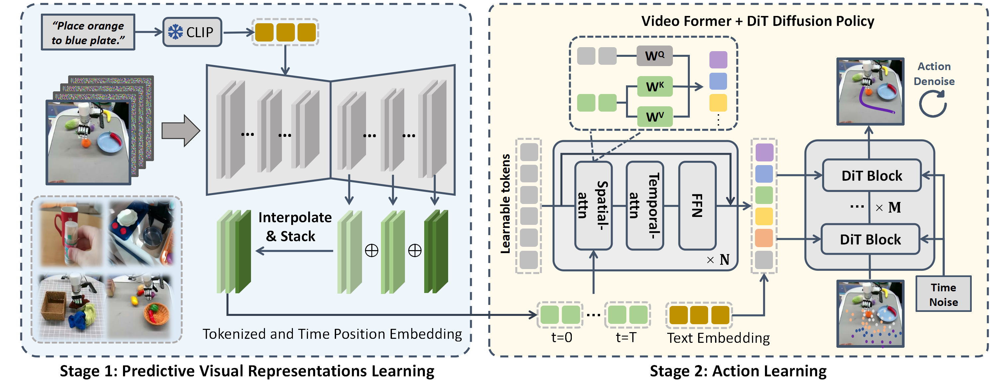
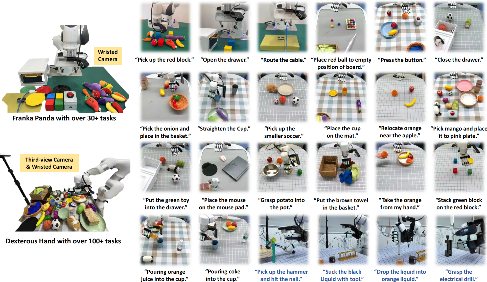

We present Video Prediction Policy (VPP), the first generalist policy for multi-task dexterous hand manipulation !
Abstract
Recently, video diffusion models (VDMs) have demonstrated the capability to accurately predict future image sequences, exhibiting a good
understanding of physical dynamics. Motivated by the strong visual prediction capabilities of VDMs, we hypothesize that they inherently possess visual representations that reflect the evolution of the
physical world,
which we term predictive visual representations. Building on this hypothesis, we propose the Video Prediction Policy (VPP), a generalist robotic policy conditioned on the predictive visual
representations from Video diffusion models. To further enhance these representations, we incorporate diverse human or robotic manipulation datasets, employing unified video-generation training objectives. VPP
consistently outperforms existing methods across two simulated and two real-world benchmarks. Notably, it achieves a 41.5% relative improvement in the Calvin ABC-D benchmark compared to the previous
state-of-the-art and delivers a 31.6% increase in success rates for complex real-world dexterous manipulation tasks.
Model architecture
We describe the two-stage learning process of the Video Prediction Policy. Initially, we train the Text-guided Video Prediction (TVP) model across diverse manipulation datasets to harness physical knowledge from internet data; subsequently, we design networks to aggregate predictive visual representations inside the TVP model and output final robot actions.

Experiment
We conduct extensive experiments on both simulated and real-world robotic tasks to evaluate the performance of the video prediction policy (VPP). The simulated environments include the CALVIN benchmark and MetaWorld benchmark, while the real-world tasks encompass Panda arm manipulation and XHand dexterous hand manipulation.
Real-world Setup

Quantitative Results
Tool-use Task Rollouts Visualization
On the dexterous hand platform, we collected 4k trajectories over 100+ tasks of 13 categories, including placing, cup-upright, relocating, stacking, passing, pressing, unplugging, opening, and complex tool using. Here we first show the chanllenging tool-use tasks. All tasks below are run with single generalist policy with different instructions.
More Tasks
We deployed the robot in various tasks including placing, cup-upright, relocating, stacking, passing, pressing, unplugging, opening. We rollout policy with unseen objects and scenes.